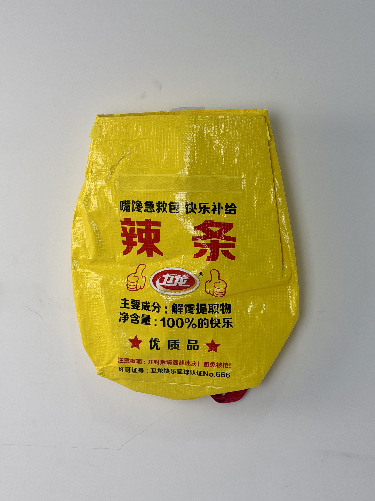

A bold yellow woven backpack designed for WeiLong, China's iconic spicy-strip brand, transforming snack packaging into wearable streetwear through ironic pharmaceutical-style labeling and maximalist typography.

WeiLong is China's most iconic spicy-strip (latiao) brand, having transformed a humble street snack into a billion-RMB FMCG phenomenon through relentless meme marketing, self-aware branding, and product innovation. The brand's marketing team operates more like a social-media content studio than a traditional food company — creating viral campaigns that blur the lines between advertising, entertainment, and internet culture. WeiLong's audience is predominantly Gen-Z consumers who value irony, shareability, and cultural participation over conventional brand messaging.
We don't sell snacks. We sell happiness, memes, and moments of guilty pleasure. Our packaging should make people laugh before they even open it.
This project represented a departure from conventional promotional bags. Rather than a simple tote for carrying purchases, WeiLong specified a full-format backpack designed as a wearable piece of brand content — something that would generate social-media engagement simply by existing in public spaces.
The creative direction fully embraces WeiLong's signature irony. The backpack mimics the graphic language of Chinese pharmaceutical packaging — complete with dosage instructions, ingredient lists, and quality certifications — but subverts every element for comedic effect. "主要成分：解馋提取物" (Main ingredient: craving-relief extract) and "净含量：100%的快乐" (Net content: 100% happiness) transform regulatory copy into brand personality.
Ironic medicine-style labeling subverts regulatory format into viral brand content optimized for social sharing.
Oversized red "辣条" characters dominate the visual field for instant brand recognition at any distance.
WeiLong's iconic yellow creates immediate brand association and high-visibility street presence.
Full wearable format transforms packaging from carry tool into streetwear statement and walking billboard.
As a wearable item rather than disposable packaging, the backpack required structural specifications appropriate for daily use. The woven PP construction provides durability while the printed details needed to survive repeated handling, weather exposure, and the general abuse of youth fashion.
| Parameter | Specification | Test Standard |
|---|---|---|
| Load Capacity | 8 kg | ASTM D5265 |
| Strap Pull Strength | > 50 N | ASTM D5034 |
| Print Abrasion | > 500 cycles | ASTM D5264 |
| Water Resistance | Grade 3 (spray test) | AATCC 22 |
Woven PP backpack production requires assembly techniques distinct from standard bag manufacturing. The five-stage workflow incorporated specialized cutting, strap integration, and drawstring hardware installation.
Yellow PP tape woven into 120gsm tubular fabric. Color-masterbatch extrusion ensures consistent yellow across production batches.
Two-color automatic screen press with red and black plastisol. Flash curing between colors prevents bleed on yellow substrate.
20-micron glossy BOPP film dry-laminated for color saturation and surface protection against daily wear.
Precision die-cutting of body panels, flap, and strap sections. Ultrasonic sealing on all raw edges prevents fraying.
Shoulder straps bar-tack reinforced. Drawstring channel sewn with reinforced eyelets. Final function and load testing.
The backpack was released as a limited-edition collectible available through WeiLong's Tmall flagship store and Douyin live-streaming channels. Rather than a free gift, it was sold as a standalone merchandise item — testing the brand's ability to monetize packaging beyond its functional role.
Key Insight: The backpack's viral success demonstrated that WeiLong's brand equity had transcended its product category. Consumers were willing to pay for the backpack as a fashion item independent of snack purchases — proving that packaging can become a standalone revenue stream rather than a cost center.
The item became a frequent sight on Chinese university campuses and in urban subway systems, generating organic brand impressions far exceeding any paid media campaign of equivalent cost. Students specifically cited the backpack's irony and shareability as purchase motivations — validating the design's social-first strategy.
Three design decisions differentiate this creative backpack from standard promotional packaging. Each leverages WeiLong's uniquely ironic brand voice and Gen-Z consumer behavior.
The medicine-label format is instantly recognizable and inherently funny when applied to snack food. This paradox creates the cognitive dissonance that drives social sharing — every wearer becomes a walking meme that others want to photograph and post.
While tote bags are carried briefly and stored, backpacks are worn for extended periods in public. By shifting format from hand-carry to back-wear, WeiLong multiplied daily brand impression exposure by an estimated 10x compared to conventional promotional bags.
By selling rather than gifting the backpack, WeiLong created perceived scarcity and value. The 48-hour sellout generated secondary-market demand and FOMO for future releases — transforming packaging into a collectible product category.
We design and manufacture creative promotional items, wearable packaging, and brand merchandise for China's most innovative FMCG brands. From meme-worthy concepts to viral-ready products, we turn packaging into content.